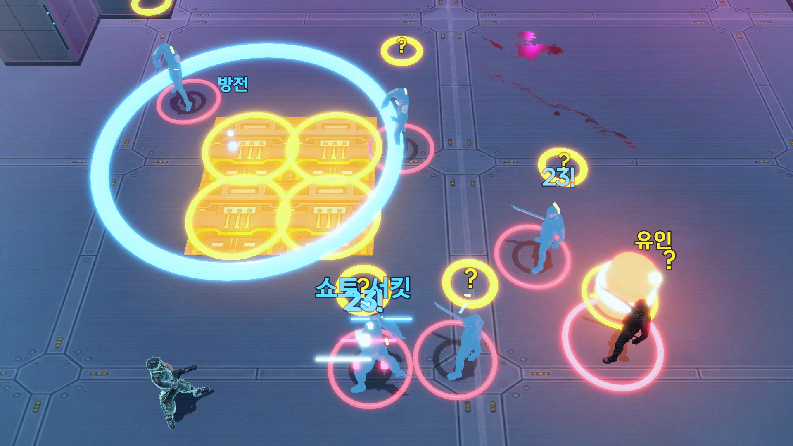
로그라이트
판마다 다른 빌드를 짠다
방을 지날 때마다 사이버웨어 · 무기 · 프로토타입 중 하나를 골라 몸을 바꿉니다. 문에 적힌 보상을 보고 다음 방을 고르는 순간이 곧 빌드 결정입니다.
- 32사이버웨어
- 8부위
- 9프로토타입
- 8무기
2026.08.21 – 10.21 · 1인 개발
사이버펑크 2077을 탑다운 로그라이트로 재구성한 게임입니다.
몸에 심는 사이버웨어로 빌드를 짜고, 그 빌드로 몰려오는 적 무리를 한 번에 쓸어버립니다.
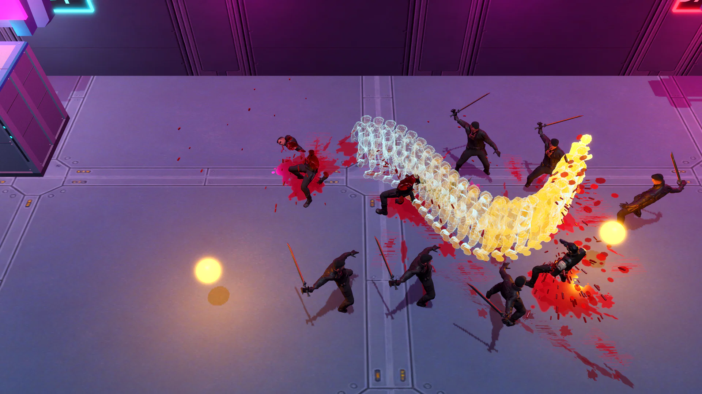
PC에서 키보드와 마우스로 플레이합니다. 웹 판은 크롬과 엣지에서 실행됩니다.
웹 판은 처음 열 때 로딩이 1분 이상 걸립니다(다시 열면 약 15초).
기다리지 않으려면 Windows 판을 내려받아 압축을 풀고 Edgerunners.exe를 실행해 주세요.
로그라이트의 빌드를 짜는 재미와 핵앤슬래시의 무리를 쓸어버리는 재미를 한 판 안에 묶었습니다.

방을 지날 때마다 사이버웨어 · 무기 · 프로토타입 중 하나를 골라 몸을 바꿉니다. 문에 적힌 보상을 보고 다음 방을 고르는 순간이 곧 빌드 결정입니다.
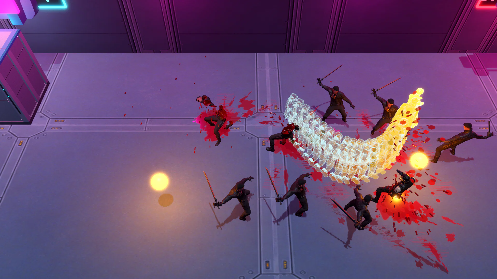
웨이브마다 적 7~9명이 사방에서 몰려옵니다. 모든 공격에 예고가 있어 피하고, 몰고, 한 번에 처치하는 리듬이 생깁니다. 빌드가 맞물릴수록 처치가 크고 시원해집니다.
이름과 콘셉트는 사이버펑크 2077에서 가져오고, 사용 방식은 탑다운 핵앤슬래시 전투에 맞게 다시 설계했습니다.
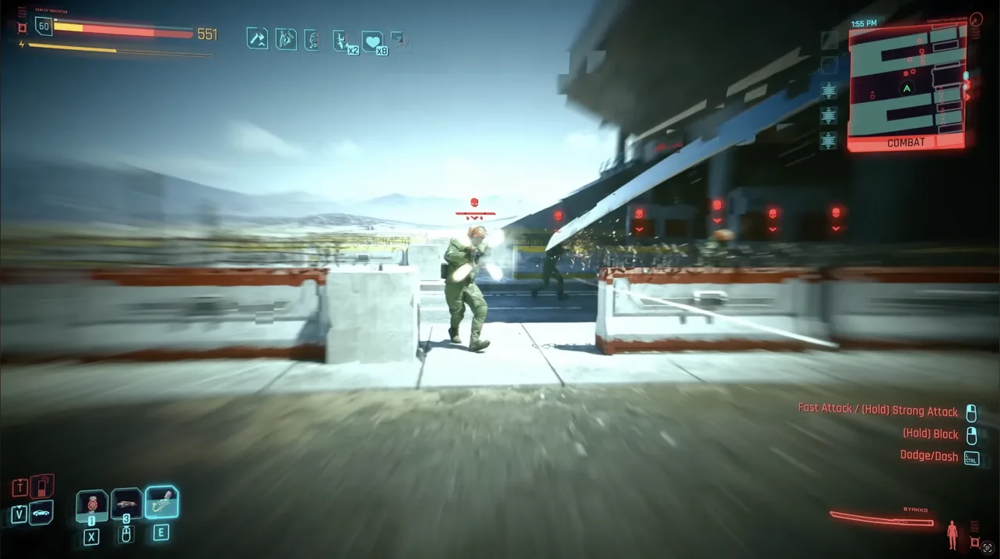
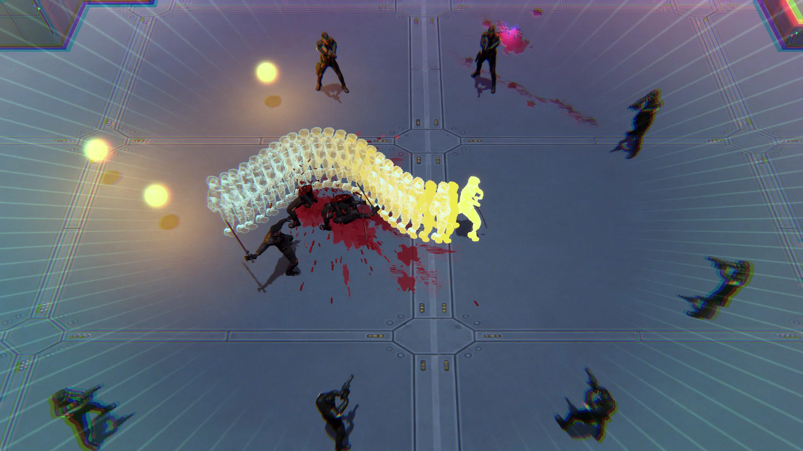
바꾼 이유처치를 이어 가는 동안 효과가 길어지도록 바꿔, 무리 사이를 지나며 연달아 베는 플레이를 보상합니다.
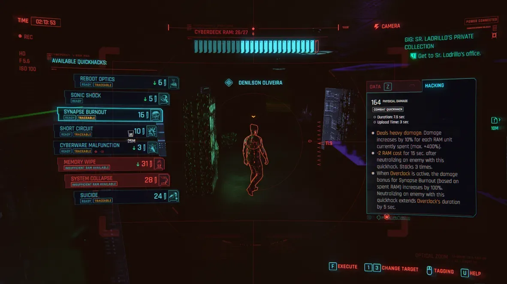
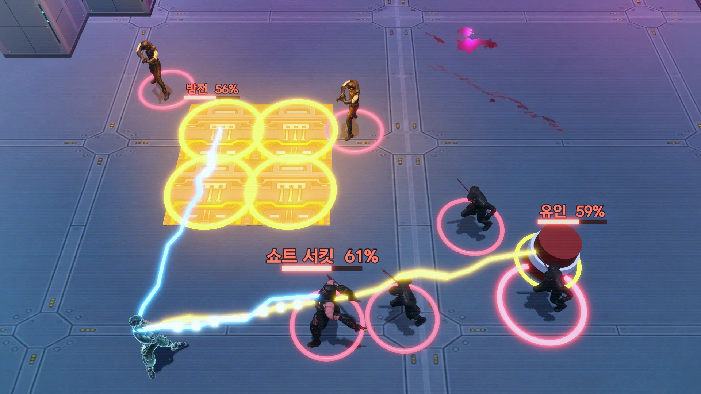
바꾼 이유실시간 탑다운 난전에서 대상을 고를 시간을 확보하고, 방에 놓인 장치까지 공격 수단으로 쓰게 합니다.
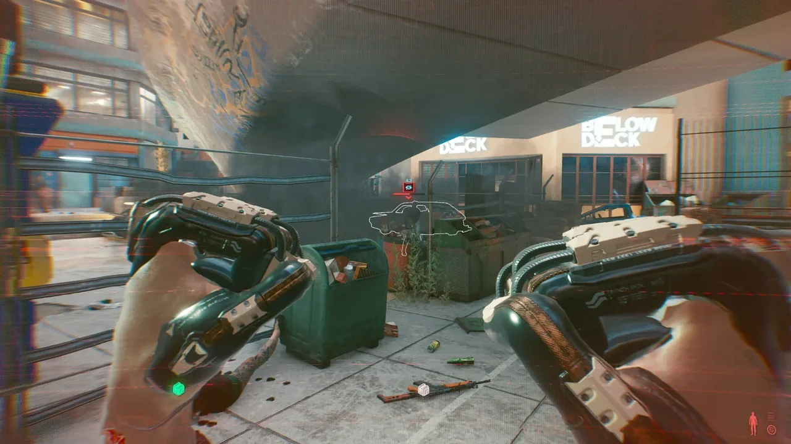
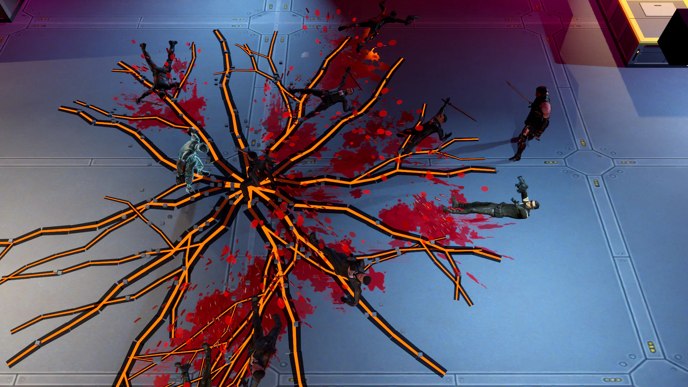
바꾼 이유손에 든 무기를 바꾸지 않고 꺼내 쓰는 군중 제어 수단으로 만들어, 어떤 빌드와도 함께 쓸 수 있게 했습니다.
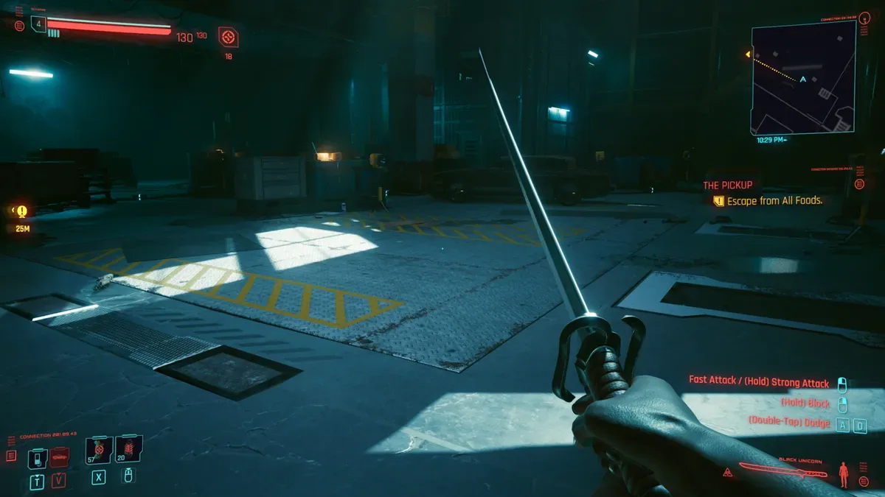
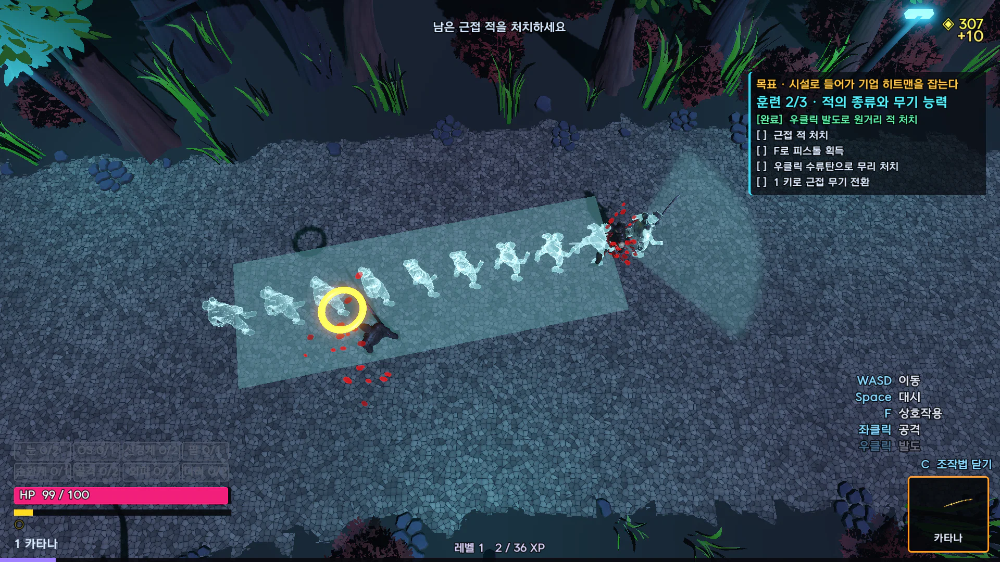
바꾼 이유같은 근접 무기라도 적에게 다가가는 방법을 다르게 해, 무기 선택이 빌드 선택이 되도록 했습니다.
원작 이미지 © CD PROJEKT RED. 비교 설명을 위해 인용했습니다.
게임 안에서 촬영한 장면입니다. 누르면 크게 볼 수 있습니다.
시설에서 출격해 방 12개를 지나 보스와 싸웁니다.
키보드 · 마우스.
| 키 | 동작 |
|---|---|
| WASD · 마우스 | 이동 · 조준 |
| 좌클릭 · 우클릭 | 공격 · 무기 고유 능력(카타나 발도, 피스톨 수류탄 …) |
| Space | 대시(무적, 낮은 엄폐물 1칸 통과) |
| 1 / 2 | 근접 · 원거리 무기 교체 |
| 3 · 4 | 팔 사이버웨어 |
| E · Q | OS 능력(산데비스탄, 버서크, 해킹 …) |
| F | 상호작용 · 쓰러진 보스 처형 |
| R | 재장전 · 쓰러졌을 때 부활 |
| I · O | 인벤토리 · 명상 보기 |
| Esc | 일시정지 |
개요 기획서 1개와 세부 기획서 5개(전투 규칙, 시스템, 레벨, 튜토리얼, 성장)로 구성했습니다.
개발 과정과 결정 기록은 작업 내역에 따로 정리했습니다.